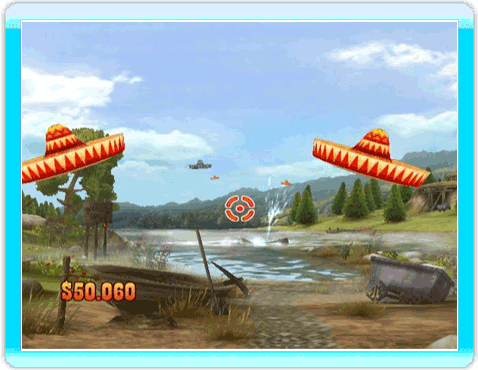
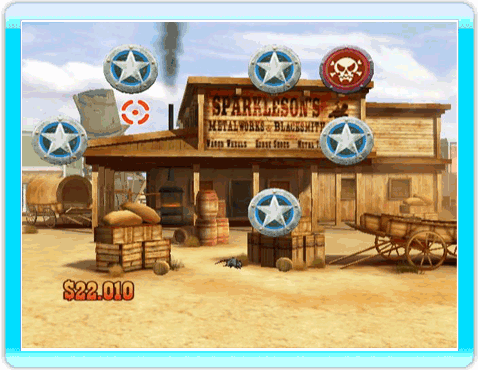
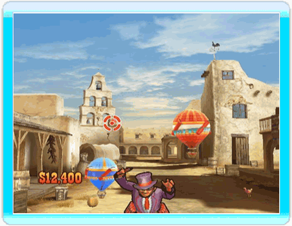
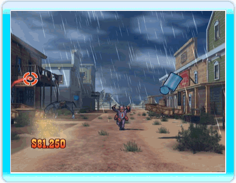
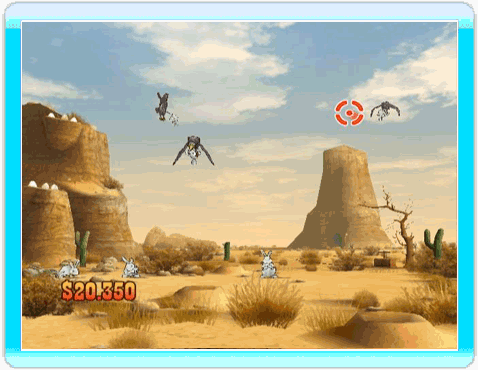

24 |
Sparatutto |
 |
Ci sono molti sombrero svolazzanti nel vecchio west. Se vuoi mettere alla prova i tuoi riflessi e guadagnare un po’ di denaro, spara ai sombrero che vedi passare sopra di te. In alcuni casi, dovrai anche riuscire a colpirli tutti! Ce la farai? CONSIGLIO ⇨ Più veloce li colpisci, più denaro guadagni!  Spara ai bersagli appena li vedi. I bersagli dorati valgono più denaro, ma fai attenzione a quelli rossi: te lo faranno perdere! CONSIGLIO ⇨ Evita i bersagli rossi. Ma fai attenzione: alcuni bersagli possono spostarsi o girarsi improvvisamente, rivelando un bersaglio rosso. 
CONSIGLIO ⇨ Spara ad una serie di palloncini dello stesso colore, uno dopo l’altro, per ottenere più denaro!  Qual era lo sport preferito del Vecchio West? Sparare alle lattine, ovviamente! Se pensi che far volare lattine a colpi di pistola sia un lavoro troppo facile per te, sappi che, man mano che procedi nel gioco e il livello di difficoltà aumenta, dovrai riuscire a tenerle sospese in aria per un certo periodo di tempo! CONSIGLIO ⇨ Tieni le lattine in aria il più possible per ottenere più denaro. E fai attenzione agli scienziati pazzi! La loro nube di fumo ti oscurerà la vista, rendendo più difficile sparare alle lattine.  I coniglietti sono proprio delle splendide ed innocenti creaturine. Non puoi certo stare lì impalato, mentre gli avvoltoi tentano di catturarli! Fai attenzione però... il percorso di quegli uccellacci è difficile da prevedere! CONSIGLIO ⇨ Fai attenzione per possibili attacchi “dal sottosuolo”! Tieni sempre alta la guardia.  Banditi che scorrazzano nel saloon? In qualità di sceriffo della città, devi riuscire a mantenere l’ordine. Togli di mezzo quei pistoleri da quattro soldi prima che ti sparino addosso. CONSIGLIO ⇨ Tieniti alla larga dal “gigante indiano”... o ti farà vedere le stelle!
Liberare un treno dai banditi? Nessun problema per te, giusto? Fai fuori quelle canaglie prima che ti sparino addosso! CONSIGLIO ⇨ Fai attenzione a dove spari. Sarebbe uno spreco sparare a quelle belle ballerine di can-can vestite di rosso, senza contare il denaro che perderesti!
|


 |
 |
 |